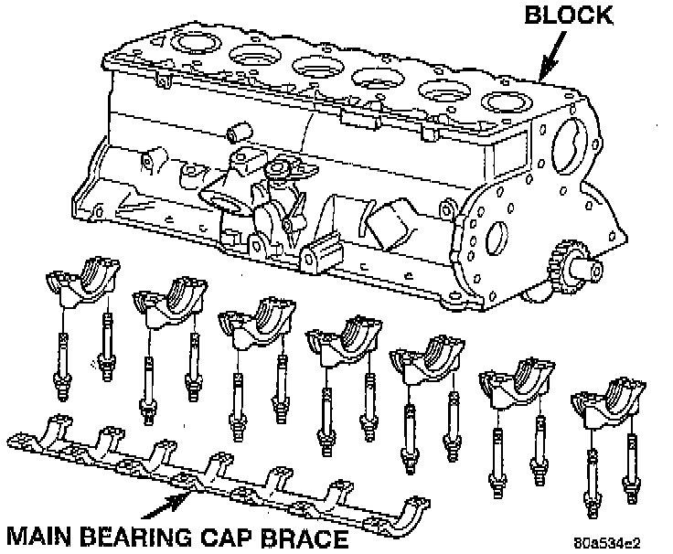
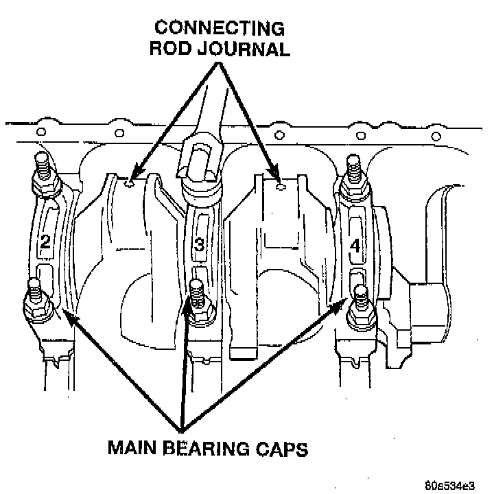
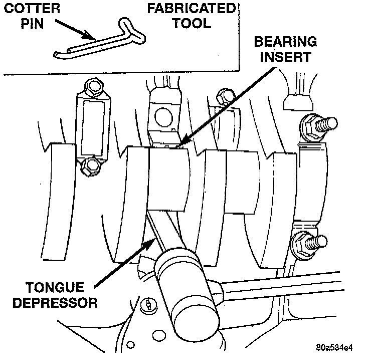

Removal
1. Disconnect negative cable from battery.2. Remove the spark plugs.
3. Raise the vehicle.
4. Remove the oil pan and oil pump.

5. Remove main bearing cap brace.

6. Remove only one main bearing cap and lower insert at a time.
7. Remove the lower insert from the bearing cap.

8. Remove the upper insert by LOOSENING (DO NOT REMOVE) all of the other bearing caps. Now insert a small cotter pin tool in the crankshaft journal oil hole. Bend the cotter pin as illustrated to fabricate the tool. With the cotter pin tool in place, rotate the crankshaft so that the upper bearing insert will rotate in the direction of its locking tab. Because there is no hole in the No. 3 main journal, use a tongue depressor or similar soft-faced tool to remove the bearing insert. After moving the insert approximately 25 mm (1 inch), it can be removed by applying pressure under the tab.
9. Using the same procedure described above, remove the remaining bearing inserts one at a time for inspection.